Eksplorasi budaya, kuliner, dan keindahan alam Madura
Bangkalan adalah kabupaten yang terletak di ujung barat Pulau Madura, Jawa Timur. Wilayah ini menjadi pintu gerbang utama menuju Madura melalui Jembatan Suramadu yang menghubungkan Bangkalan dengan Surabaya. Posisi strategis ini menjadikan Bangkalan sebagai simpul penting dalam pertumbuhan ekonomi, budaya, dan pariwisata di kawasan Madura. Masyarakat Bangkalan dikenal menjunjung tinggi nilai-nilai tradisi dan kearifan lokal. Seni batik Madura yang berani dan penuh warna, karapan sapi yang mendebarkan, serta bahasa dan adat istiadat yang khas menjadikan Bangkalan sebagai pusat identitas budaya Madura. Di tengah arus modernisasi, masyarakat tetap menjaga warisan leluhur dengan penuh kebanggaan. Dari sisi pariwisata, Bangkalan menawarkan beragam destinasi menarik. Bukit Kapur Arosbaya menghadirkan lanskap eksotis dengan pahatan alami yang unik, Bukit Jaddih menyuguhkan panorama kapur putih dan danau biru yang fotogenik, sementara Pantai Siring Kemuning menjadi tempat ideal untuk menikmati suasana pesisir yang tenang dan indah. Tak hanya alam dan budaya, Bangkalan juga kaya akan kuliner khas yang menggugah selera. Nasi Serpang dengan lauk lengkap, Topak Ladeh yang kaya rempah, dan Tajin Sobih yang manis dan lembut adalah beberapa contoh cita rasa autentik yang hanya bisa ditemukan di sini. Dengan semangat masyarakatnya yang gigih dan kreatif, Bangkalan terus berbenah dan membuka diri terhadap inovasi, tanpa meninggalkan akar budayanya. Kabupaten ini bukan hanya tempat tinggal, tetapi juga ruang inspirasi bagi siapa pun yang ingin mengenal Madura lebih dalam.
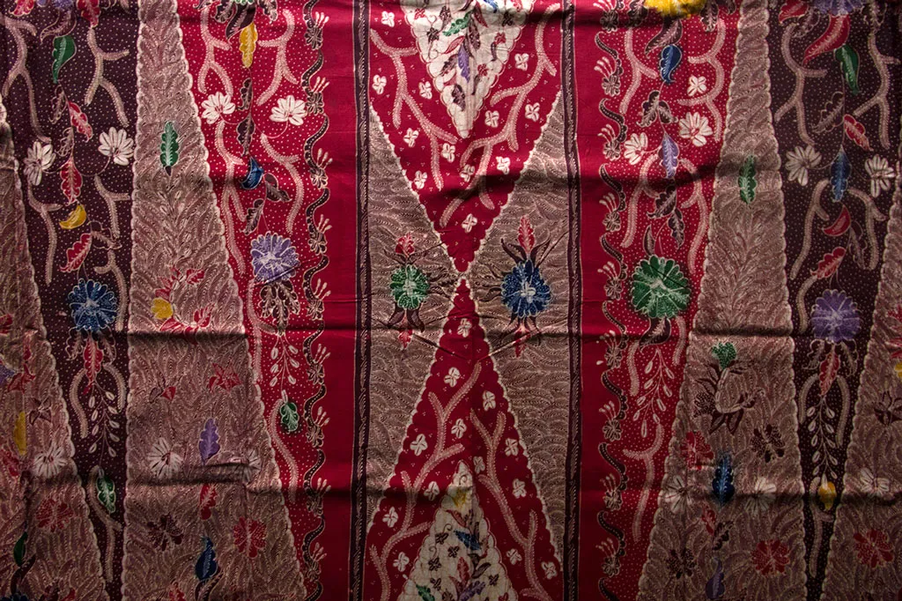
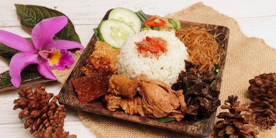
Perpaduan lauk laut dan darat seperti pepes tongkol, kerang sambal, telur asin, dendeng sapi, dan sambal terasi. Rasanya gurih, pedas, dan kaya rempah.
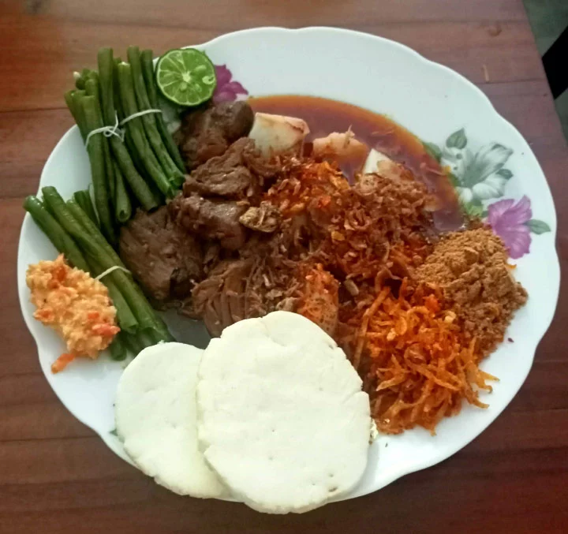
Lontong dengan kuah santan merah pekat, berisi daging, jeroan, dan telur. Biasanya disajikan saat Lebaran dengan rasa rempah yang kuat.
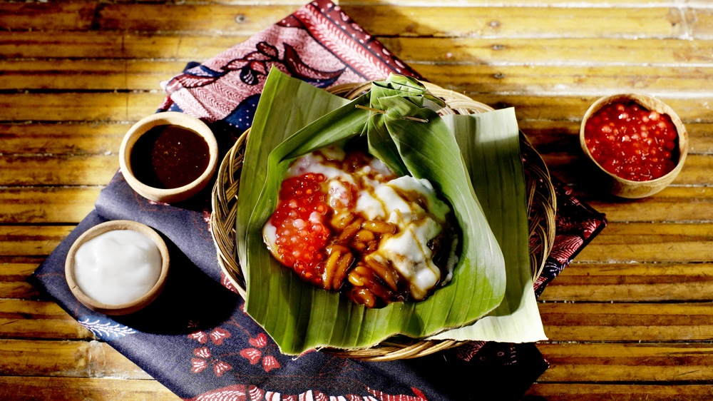
Bubur khas Desa Sobih yang disajikan dengan gula merah dan cenil cokelat, dibungkus daun pisang dan dimakan dengan sendok daun.
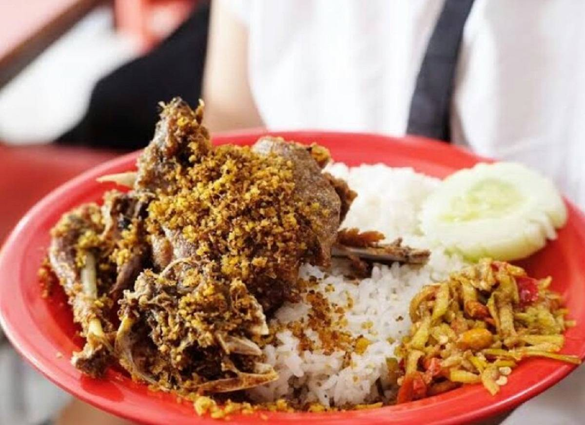
Nasi bebek goreng dengan daging yang empuk, disajikan bersama bumbu hitam gurih dan sambal pencit (sambal mangga muda) yang pedas dan segar.
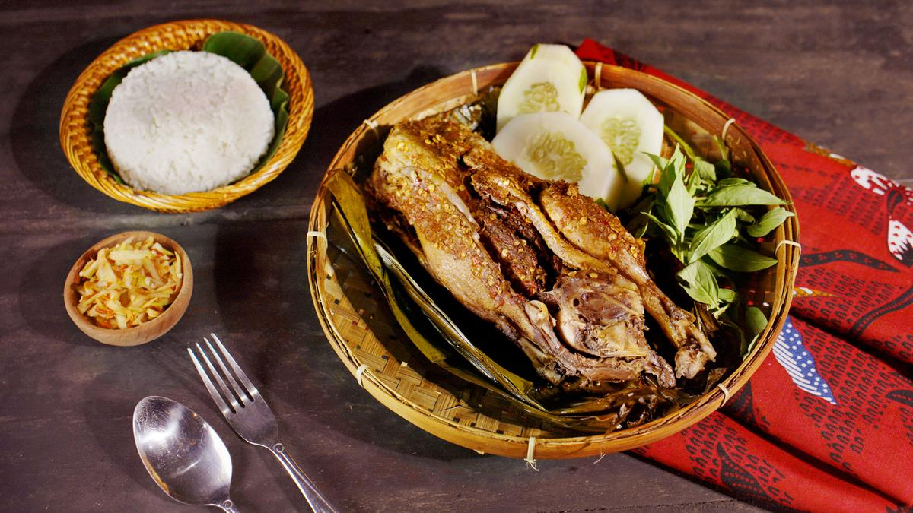
Olahan bebek khas Bangkalan yang dimasak dengan cara dikukus bersama bumbu rempah melimpah menggunakan bungkus daun pisang, sehingga lebih sehat dan sarat rempah.
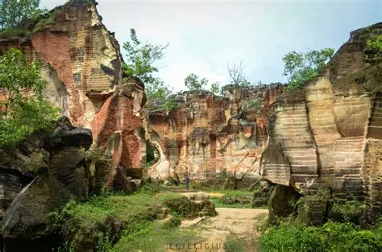
Bekas tambang kapur dengan warna coklat keemasan dan pahatan unik. Cocok untuk foto eksotis dan wisata alam.
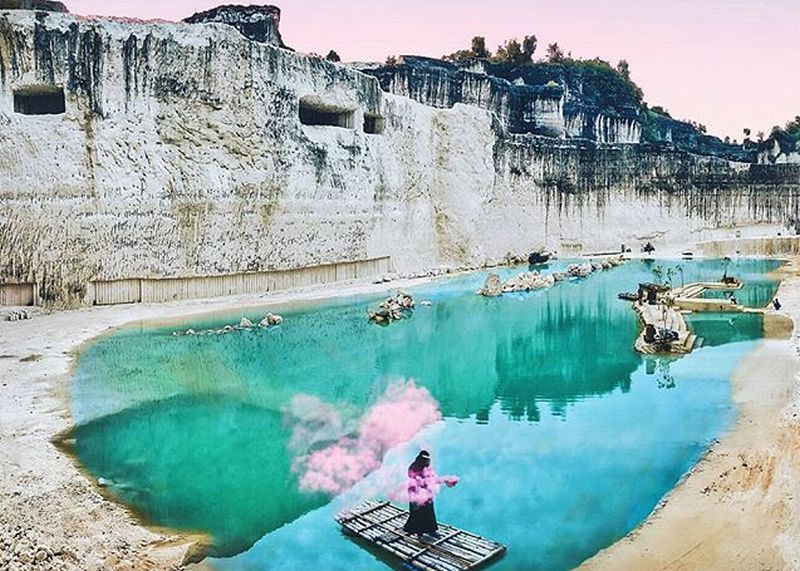
Panorama bukit kapur putih dengan danau biru kehijauan. Spot favorit untuk fotografi dan prewedding.
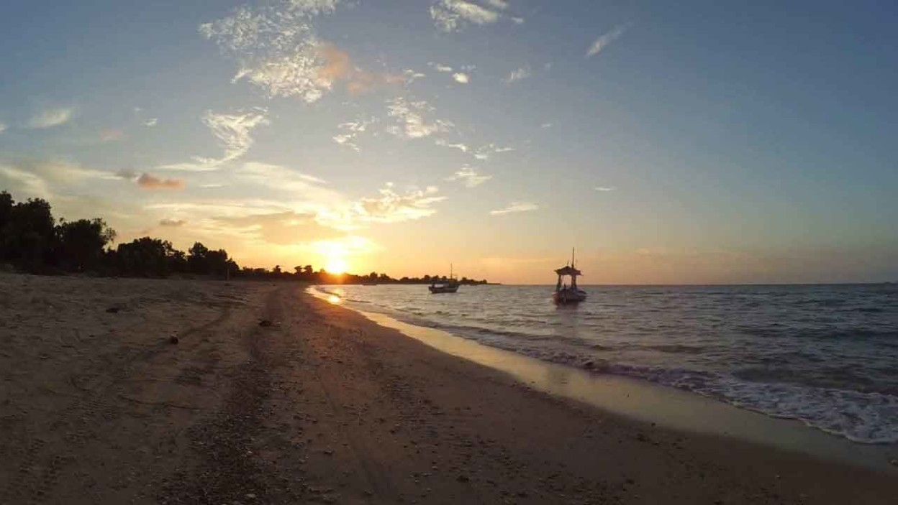
Pantai berpasir putih dengan ombak kekuningan dan pepohonan rindang. Tempat ideal untuk bersantai dan berburu sunset.
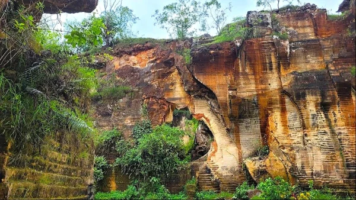
Bekas tambang kapur berwarna merah kecokelatan dengan pahatan tebing yang membentuk relief alami yang cantik.
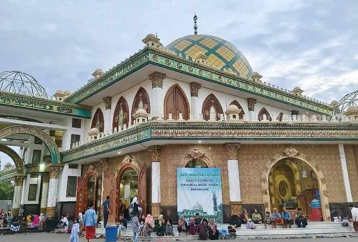
Wisata religi khas Bangkalan yang terletak di tengah desa, dengan arsitektur tradisional dan suasana yang tenang.